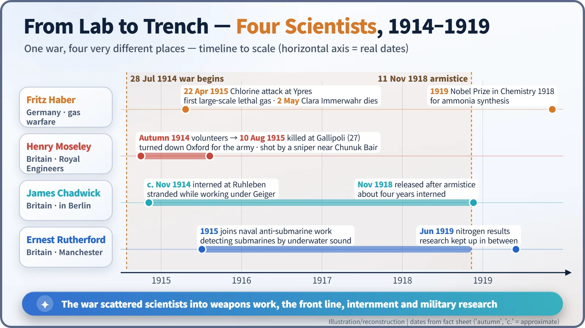
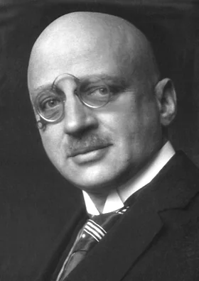
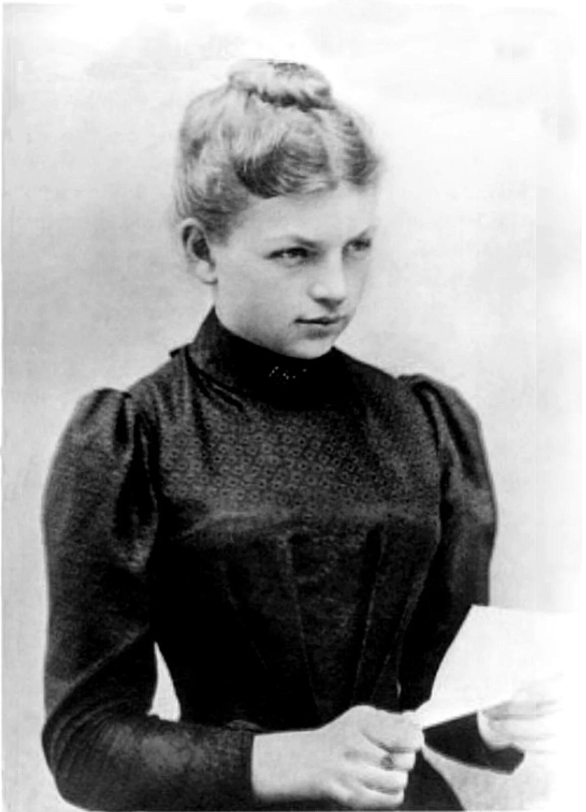
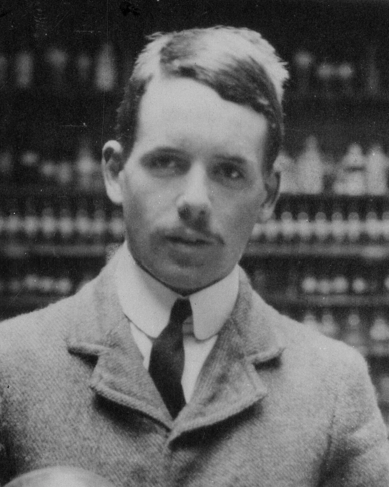
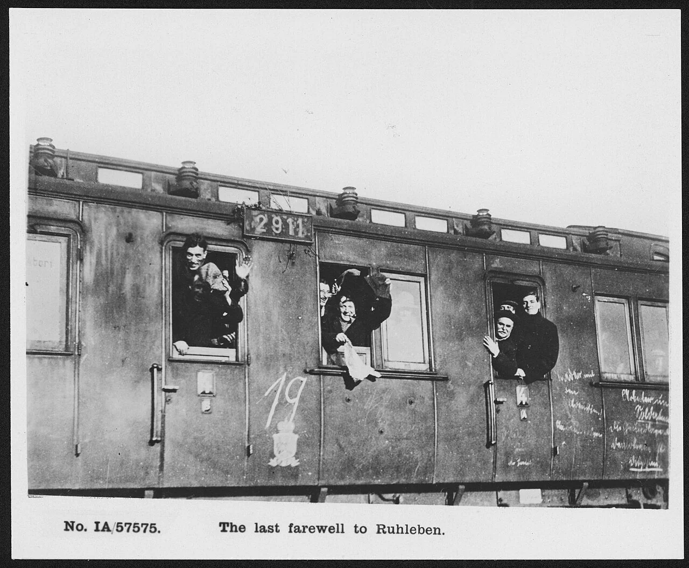
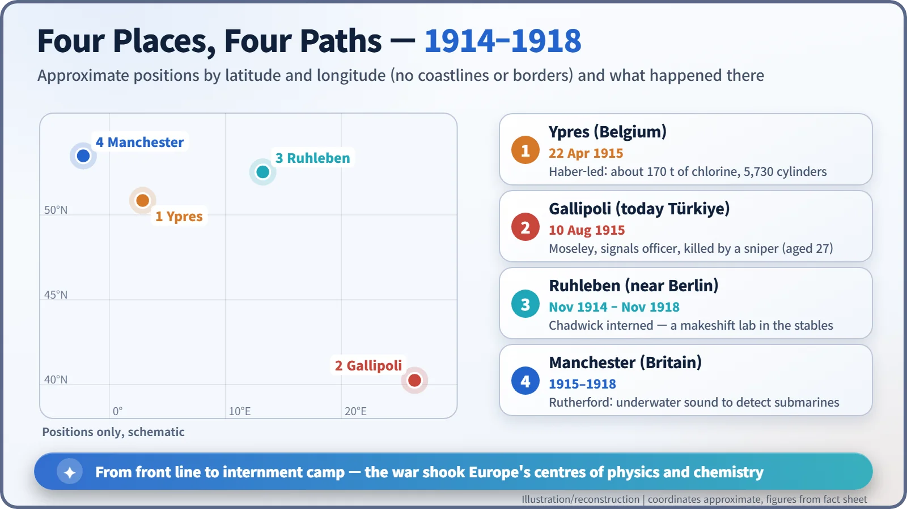

Nuclear History · 030
From Laboratory to Trench — Scientists in the First World War (Haber and Moseley)
Haber led the gas attack at Ypres, Moseley fell at Gallipoli and Chadwick sat out the war in an internment camp: the first war to mobilize science on a mass scale.
The First World War (1914–1918) was the first war that pulled scientists out of their laboratories on a massive scale. Fritz Haber led Germany's chlorine attack at Ypres, the young physicist Henry Moseley was killed at Gallipoli, and James Chadwick spent the war interned near Berlin. Their stories show how science and the state became entangled a generation before the atomic bomb.
What if the bullet had missed?
On 10 August 1915, on the Gallipoli peninsula, a 27-year-old British physicist named Henry Moseley (1887–1915) was killed by a sniper. Only a year or two earlier he had pinned down, by experiment, each element's true "address" in the periodic table: its atomic number. Had he come home, the study of the atomic nucleus might have moved a little faster. The question has lingered for a reason. The First World War was the first war that drew scientists into the conflict on such a scale. [2]
Signatures first, then uniforms
When war broke out on 28 July 1914, European science split along national lines. On 4 October 1914, 93 German intellectuals published a manifesto, "To the Civilized World!" (An die Kulturwelt!), defending their country's war. The signatories included Max Planck, Wilhelm Röntgen and the chemist Fritz Haber (1868–1934). Albert Einstein, by contrast, did not sign. [9]

Five o'clock at Ypres
Haber was director of the Kaiser Wilhelm Institute for Physical Chemistry in Berlin-Dahlem. He had found a way to make ammonia from the nitrogen in the air, the process that opened the door to mass-produced fertilizer. When the war began he took charge of the army's chemistry section and proposed using chlorine, a gas heavier than air, as a weapon. [6]

At about 5 p.m. on 22 April 1915, along roughly 6.5 km of front line north of Ypres in Belgium, German troops opened 5,730 cylinders. About 170 tonnes of chlorine drifted towards the French lines. It was the first large-scale use of a lethal gas (irritant agents had been tried earlier). Estimates of that day's casualties vary enormously between sources, from a few thousand to tens of thousands. For the war as a whole, the Organisation for the Prohibition of Chemical Weapons (OPCW) estimates that more than 90,000 soldiers died from chemical weapons and close to a million more were injured. [1] [7]
One detail matters for nuclear history. Haber's gas units included a young chemist, Otto Hahn, and two physicists, James Franck and Gustav Hertz. Hahn would later discover nuclear fission; Franck and Hertz would share a Nobel Prize in Physics. Some of the leading figures of the nuclear story first met war here. [7]
Ten days later, on 2 May 1915, Haber's wife Clara Immerwahr (1870–1915), a chemist and the first woman to earn a doctorate in chemistry at the University of Breslau, took her own life. A widely repeated explanation is that she opposed her husband's gas work, but historians point to several possible factors, and her motives cannot be stated with certainty. [6]

The signals officer at Gallipoli
On the British side, Moseley turned down a post at Oxford and volunteered for the Royal Engineers. Responsible for communications in the 38th Brigade of the 13th Division, he was shot by a sniper on 10 August 1915 near Chunuk Bair while sending a military order. His body was never found; his name is on the Helles Memorial. The American physicist Robert Millikan wrote that if the war had had no other result than "the snuffing out of this young life, that alone would make it one of the most hideous and most irreparable crimes in history." It is often said that Britain stopped sending its leading scientists into combat after his death, but no clear official basis for that claim has been confirmed. [3] [4]

A stable-block lab and the sound of submarines
Not everyone went to the front. James Chadwick (1891–1974), a young Briton studying beta rays under Hans Geiger in Berlin, was caught in Germany when war broke out. He spent about four years interned in the civilian camp at Ruhleben, a former racecourse near Berlin. He set up a makeshift laboratory in the stables and kept experimenting with a fellow internee, Charles Ellis. He was released only after the armistice, in November 1918. [8]

In Manchester, Ernest Rutherford threw himself into the Royal Navy's search for ways to detect submarines by underwater sound. Even so, he found time to keep firing alpha particles into nitrogen, and he reported the results in 1919. A story often told has him skipping a committee meeting because splitting the atom mattered more than the war; it appears in biographies, but no first-hand record of the remark has been confirmed.

The question the war left behind
Haber received the 1918 Nobel Prize in Chemistry, awarded in 1919, "for the synthesis of ammonia from its elements". His process still underpins world food production, yet the award was sharply criticized because of his role in gas warfare. The man who had served his country so zealously resigned as institute director on 30 April 1933, after the Nazi government began driving Jewish officials out of public posts. He died the following January in Basel, Switzerland. The international community banned the use of chemical weapons in the 1925 Geneva Protocol, and in 1997 the Chemical Weapons Convention entered into force, outlawing their development and stockpiling as well. [1] [5] [6]
The First World War was the first time a state systematically mobilized university scientists. That experience was the starting point of a much larger current that, a generation later, would carry science into radar and the atomic bomb. "In peacetime a scientist belongs to the world, but in wartime he belongs to his country" is a line often attributed to Haber, though its sourcing is second-hand. How to answer it is a question that would return again and again throughout the history of nuclear energy.